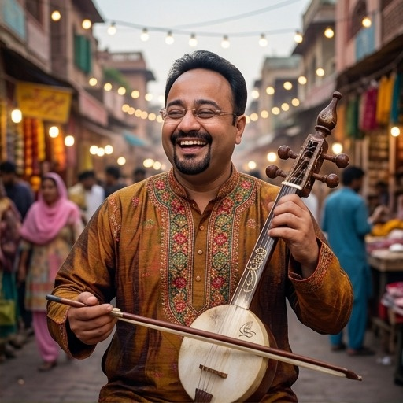
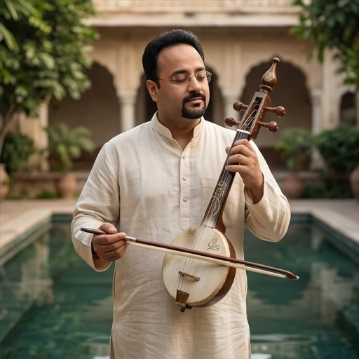

Artist Overview
Before music, Hartaaj Music built a career across hospitality and banking — a hotelier by background and a banking professional by trade. Both fields run on the same instincts he now brings to music: reading a room, holding people's attention, and delivering something dependable and well-finished every time. That professional grounding shows up in how he writes, produces and releases music today — deliberate, detail-oriented, and built to last rather than chase a moment.
Musically, his expertise runs deep: a strong, hands-on command of composition, Punjabi Sufi lyric-writing and the bowed-string instrumentation that anchors his sound. He writes and directs his own releases in-house, pairing traditional Punjabi Sufi sensibility with a contemporary, independent-artist approach to production and distribution.
Background & Journey
Achievements & Industry Presence
As an independent artist, Hartaaj Music invests directly in India's live and independent music community — showing up in person, building relationships, and staying close to the culture he writes for.
Visual & Artist Identity
The image direction presents Hartaaj Music as a modern Punjabi Sufi storyteller: introspective, joyful, rooted in heritage and equally at home in a contemporary, professional setting.



Full editorial photo sheet available on request.
Musical Identity
Hartaaj Music writes in the Punjabi Sufi tradition, exploring themes of purpose, identity, authenticity and legacy. His sound is built around an earthy, bowed-string palette, giving each release a distinct, rooted character that sits comfortably alongside contemporary independent and folk-adjacent programming.